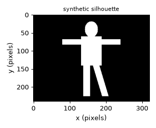
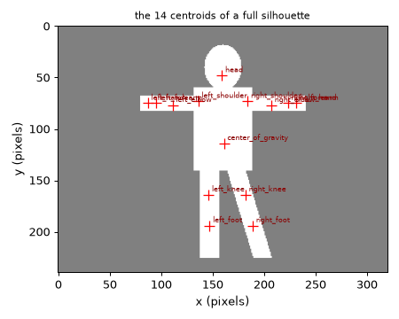
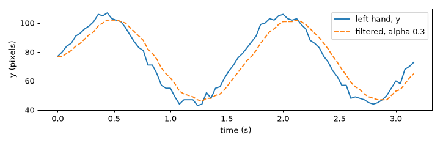
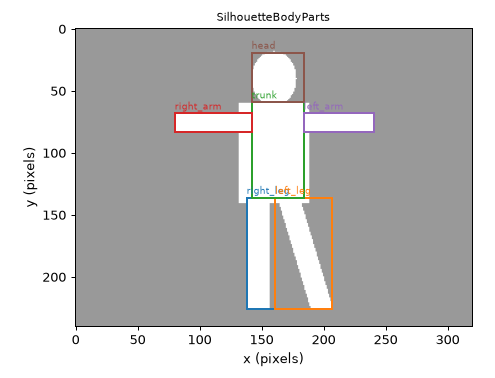
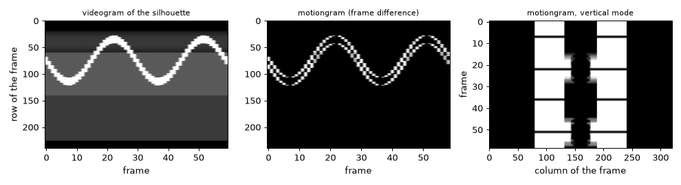
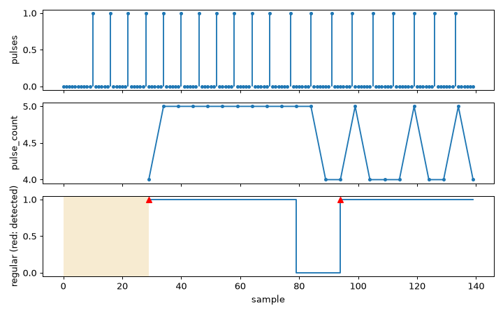

Note
Go to the end to download the full example code.
Physical signals: images#
Not every recording of a body is a skeleton: a camera gives images. This tutorial reduces the silhouette of a person to a
few quantities that follow the movement: where its centre and its parts are (SilhouetteCentroids,
SilhouetteBodyParts), how its images evolve over time (Videogram), whether a series of pulses is regular
(BinaryPulsesRegularity), and how to cut asynchronous streams into windows that cover the same time
(TimeWindowSynchronizer). The images are synthetic: the example data hold only motion capture.
- Goals:
give an image to a feature and read its result; find the centroids and the parts of a silhouette and choose them with
parts; draw a videogram and a motiongram; detect a regular rhythm in a pulse signal; line up streams of different rates with a synchronizer.- Prerequisites:
- Data:
synthetic silhouettes made by
helpers.synthetic_silhouette; no video files.- Time:
about 20 minutes.
The image input#
An image is one 8-bit array per call: (H, W) for a grayscale image or a mask, (H, W, C) for colour; a bool array
is a 0 / 1 mask. A silhouette is a mask in which every non-zero pixel is the body. Coordinates are in pixels of the
frame you give, with x counted from the left and y from the top (so y points down), and “left” and “right”
are those of the image: left means the smaller x. run takes (T, H, W) or a list of images, one per frame. See
Imaging for the definitions and Work with images for how to prepare your own masks.
Our body is a head, a trunk, two arms (a horizontal bar) and two legs, one of them slanted, in a 240 x 320 frame.
import matplotlib.pyplot as plt
import numpy as np
from helpers import shade_status, synthetic_silhouette
body = synthetic_silhouette()
print(body.shape, body.dtype, "| values:", np.unique(body))
fig_body, ax = plt.subplots(figsize=(3.4, 2.8))
ax.imshow(body, cmap="gray")
ax.set_title("synthetic silhouette", fontsize=9)
ax.set_xlabel("x (pixels)")
ax.set_ylabel("y (pixels)")
ax.grid(False)
fig_body.tight_layout()

(240, 320) uint8 | values: [ 0 255]
Centroids: where is the body?#
SilhouetteCentroids splits the silhouette recursively around its centre of gravity and
takes the centre of gravity of each rectangle: the shoulders from the upper quadrants, the head between them, the elbow,
the forearm and the hand outwards, the knee and the foot downwards. Without a skeleton it gives 14 points, in pixels
(centroids) and as a fraction of the frame (normalized), one row per name of the schema; a row is NaN when its
centroid does not exist.
from pyeyesweb.physical_signals import SilhouetteCentroids
centroids = SilhouetteCentroids(add_intermediate_centroids=True)
print(centroids.inputs)
print(centroids.outputs)
result = centroids.process(body)
names = centroids.outputs["centroids"].axis_names[0]
print(names)
print("centre of gravity (x, y) in pixels:", result.centroids[0], "| as a fraction of the frame:", result.normalized[0])
fig_centroids, ax = plt.subplots(figsize=(5, 4))
ax.imshow(body, cmap="gray", alpha=0.5)
ax.grid(False)
for name, (x, y) in zip(names, result.centroids):
ax.plot(x, y, "r+", ms=9)
ax.annotate(name, (x, y), fontsize=6, color="darkred", xytext=(3, 3), textcoords="offset points")
ax.set_title("the 14 centroids of a full silhouette", fontsize=9)
ax.set_xlabel("x (pixels)")
ax.set_ylabel("y (pixels)")
fig_centroids.tight_layout()

Inputs(silhouette: image (?, ?) - mask of the body: every non-zero pixel is foreground)
Schema(Output('centroids', shape=(14, 2), unit='px'), Output('normalized', shape=(14, 2)))
('center_of_gravity', 'head', 'left_shoulder', 'left_elbow', 'left_forearm', 'left_hand', 'right_shoulder', 'right_elbow', 'right_forearm', 'right_hand', 'left_knee', 'left_foot', 'right_knee', 'right_foot')
centre of gravity (x, y) in pixels: [161. 114.] | as a fraction of the frame: [0.5031 0.475 ]
parts chooses the centroids to output; the others are NaN, and a centroid is still computed when one that depends on it
is requested. silhouette tells which part of the body the mask shows ("full", "upper", "lower", "left"
or "right"); the centroids of the missing half are not computed.
hand_and_head = SilhouetteCentroids(parts=["head", "left_hand"])
selected = hand_and_head.process(body).centroids
print({name: tuple(float(v) for v in row) for name, row in zip(names, selected) if np.isfinite(row).all()})
upper = SilhouetteCentroids(silhouette="upper").process(body).centroids
print("upper half: the left knee is NaN:", bool(np.isnan(upper[names.index("left_knee")]).all()))
{'head': (159.0, 48.0), 'left_hand': (87.0, 75.0)}
upper half: the left knee is NaN: True
Over time, with a moving arm. The frame holds a body whose arms rise and fall, with a jitter of a few pixels as a noisy
segmentation would give. filter_centroids=True smooths each centroid with a first-order filter of coefficient
alpha (1 does not filter). The filter works on the position inside the bounding box of the silhouette, as in EyesWeb.
rng = np.random.default_rng(0)
arm_rows = 75 + 30 * np.sin(np.linspace(0, 4 * np.pi, 80)) + rng.integers(-3, 4, size=80)
clip = [synthetic_silhouette(arm_row=int(row)) for row in arm_rows]
frame_rate = 25.0 # frames per second of the synthetic video
frame_time = np.arange(len(clip)) / frame_rate
raw = SilhouetteCentroids().run(clip)["centroids"][:, names.index("left_hand"), 1]
smooth = SilhouetteCentroids(filter_centroids=True, alpha=0.3).run(clip)["centroids"][:, names.index("left_hand"), 1]
fig_filter, ax = plt.subplots(figsize=(8, 2.6))
ax.plot(frame_time, raw, label="left hand, y")
ax.plot(frame_time, smooth, "--", label="filtered, alpha 0.3")
ax.set_xlabel("time (s)")
ax.set_ylabel("y (pixels)")
ax.legend()
fig_filter.tight_layout()
single = [SilhouetteCentroids().process(frame).centroids for frame in clip[:5]]
print("run equals process:", np.array_equal(SilhouetteCentroids().run(clip[:5])["centroids"], np.stack(single), equal_nan=True))

run equals process: True
Takeaway. The centroids follow the body without a skeleton; parts selects them and the filter smooths a noisy
segmentation.
Body parts from the projections of the mask#
SilhouetteBodyParts divides the silhouette into the head, the trunk, two arms and two
legs, with the bounding box and the mask of each part. It counts the foreground pixels along each column and each row (the
projection histograms) and applies thresholds: the arm columns are found by accumulating the area from each side
(arm_percentage), the legs by the extent of the lower rows, the neck where the body narrows. The output regions
has one row (x, y, width, height) per part, is_found says which parts were found, and masks holds the mask of
each part found. A part is dropped when it is empty or touches the first row or column of the frame.
from matplotlib.patches import Rectangle
from pyeyesweb.physical_signals import SilhouetteBodyParts
parts = SilhouetteBodyParts()
found = parts.process(body)
part_names = parts.outputs["regions"].axis_names[0]
print(part_names)
print(found.regions)
print("found:", dict(zip(part_names, found.is_found.tolist())))
fig_parts, ax = plt.subplots(figsize=(5.5, 4.2))
ax.imshow(body, cmap="gray", alpha=0.4)
ax.grid(False)
for index, name in enumerate(part_names):
x, y, width, height = found.regions[index]
ax.add_patch(Rectangle((x, y), width, height, fill=False, ec=f"C{index}", lw=1.6))
ax.text(x, y - 3, name, color=f"C{index}", fontsize=7)
ax.set_title("SilhouetteBodyParts", fontsize=9)
ax.set_xlabel("x (pixels)")
ax.set_ylabel("y (pixels)")
fig_parts.tight_layout()

('right_leg', 'left_leg', 'trunk', 'right_arm', 'left_arm', 'head')
[[138 136 23 90]
[161 136 46 90]
[142 59 42 77]
[ 80 68 62 15]
[184 68 57 15]
[142 19 42 40]]
found: {'right_leg': True, 'left_leg': True, 'trunk': True, 'right_arm': True, 'left_arm': True, 'head': True}
As for the centroids, parts selects what is returned: the rows of the other parts are zero and masks keeps only the
selected ones.
legs = SilhouetteBodyParts(parts=["right_leg", "left_leg"]).process(body)
print("masks returned:", list(legs.masks))
print("regions of the head, not selected:", legs.regions[part_names.index("head")])
masks returned: ['right_leg', 'left_leg']
regions of the head, not selected: [0 0 0 0]
Takeaway. SilhouetteBodyParts gives a box and a mask per body part from a plain mask; the rows are in the order of
the schema.
The videogram: a video in one image#
A video can be summarised in one image: each frame is reduced to a single line, by summing its pixels along one axis, and
the lines of successive frames are placed side by side, so that a movement becomes a visible trace.
Videogram does this, scaling each line to 0-255. With mode="horizontal" the line is
the sum of each row (one column per frame); with "vertical" it is the sum of each column. The window is the number
of lines kept. Fed with a motion image, the difference between consecutive frames, the result is a motiongram: it
shows only what moves, and a still body disappears.
from pyeyesweb.physical_signals import Videogram
arm_rows = (75 + 40 * np.sin(np.linspace(0, 4 * np.pi, 60))).astype(int)
film = [synthetic_silhouette(arm_row=int(row)) for row in arm_rows]
motion = [np.abs(film[i].astype(int) - film[i - 1].astype(int)).astype(np.uint8) for i in range(1, len(film))]
videogram = Videogram(window=len(film))
print(videogram.inputs)
print(videogram.outputs)
last = videogram.process(film[0])
print("one frame gives an image of shape", last.videogram.shape, "(rows, window, channels)")
fig_videogram, axes = plt.subplots(1, 3, figsize=(11, 3))
panels = (("videogram of the silhouette", film, "horizontal"),
("motiongram (frame difference)", motion, "horizontal"),
("motiongram, vertical mode", motion, "vertical"))
for ax, (title, frames, mode) in zip(axes, panels):
gram = Videogram(window=len(frames), mode=mode).run(frames)["videogram"][-1][:, :, 0]
ax.imshow(gram, cmap="gray", aspect="auto")
ax.set_title(title, fontsize=9)
ax.grid(False)
axes[0].set_xlabel("frame")
axes[0].set_ylabel("row of the frame")
axes[1].set_xlabel("frame")
axes[2].set_xlabel("column of the frame")
axes[2].set_ylabel("frame")
fig_videogram.tight_layout()

Inputs(frame: image (?, ?, ?) - grayscale or colour frame)
Schema(Output('videogram', shape=(None, None, None), kind=int))
one frame gives an image of shape (240, 60, 1) (rows, window, channels)
A colour frame has its channels last, and each channel is summed and scaled on its own. When the image is full the oldest
line is overwritten; end_of_image_mode="scroll" rotates the image so that the oldest line comes first, and
direction sets where the newest line is written. A frame of another size restarts the videogram and says so in the
reason.
scrolling = Videogram(window=8, end_of_image_mode="scroll")
for frame in film[:11]:
scrolling_result = scrolling.process(frame)
print("scrolling image:", scrolling_result.videogram.shape)
colour = Videogram(window=5).process(np.dstack([film[0], film[1], film[2]]))
print("colour frame ->", colour.videogram.shape)
resized = Videogram(window=8)
resized.process(film[0])
print("another frame size ->", resized.process(film[1][:100]).reason)
scrolling image: (240, 8, 1)
colour frame -> (240, 5, 3)
another frame size -> frame size changed: videogram restarted
Takeaway. A videogram turns time into an axis of an image; the motiongram of a frame difference shows the movement alone.
A regular rhythm: BinaryPulsesRegularity#
A rhythm can be read from a signal in which a non-zero sample is a pulse: a footstep, a beat, or the peaks found in a
movement. BinaryPulsesRegularity works on a window of window samples (a result
every hop samples). The distance between the first two pulses of the window is the reference. The window is
regular when it holds at least three pulses and every other interval differs from the reference by at most
threshold samples. The outputs are is_regular, pulse_count and is_regularity_detected, which is true for
the first regular window after a window that was not. Here steady steps every 6 samples are followed by a slower, still
regular, rhythm of one step every 7.
from pyeyesweb.analysis_primitives import BinaryPulsesRegularity
steps = np.zeros(140)
steps[10:70:6] = 1
steps[70::7] = 1
feature = BinaryPulsesRegularity(window=30, hop=5, threshold=0)
print(feature.inputs)
print(feature.outputs)
record = feature.run(steps)
ok_rows = record.status == 0
print("regular windows:", int(record["is_regular"].sum()), "of", int(ok_rows.sum()),
"| status counts:", {name: int((record.status == code).sum()) for name, code in (("OK", 0), ("WARMING_UP", 1), ("NO_OUTPUT", 2))})
fig_pulses, axes = plt.subplots(3, 1, figsize=(8, 5), sharex=True)
axes[0].stem(steps, markerfmt=".", basefmt=" ")
axes[0].set_ylabel("pulses")
rows = np.arange(len(record)) # one row per sample; a result is made every hop samples
axes[1].plot(rows[ok_rows], record["pulse_count"][ok_rows], ".-")
axes[1].set_ylabel("pulse_count")
axes[2].step(rows[ok_rows], record["is_regular"][ok_rows].astype(int), where="post")
axes[2].plot(np.flatnonzero(record["is_regularity_detected"]), np.ones(int(record["is_regularity_detected"].sum())), "r^")
axes[2].set_ylabel("regular (red: detected)")
axes[2].set_xlabel("sample")
shade_status(axes[2], rows, record.status, codes=(1,)) # yellow: the first window is not full yet
fig_pulses.tight_layout()

Inputs(signal: sample (1) - one value per call; a non-zero value is a pulse)
Schema(Output('is_regular', kind=bool), Output('pulse_count', kind=int), Output('is_regularity_detected', kind=bool))
regular windows: 20 of 23 | status counts: {'OK': 23, 'WARMING_UP': 29, 'NO_OUTPUT': 88}
The plot shows the window that straddles the change of rhythm as not regular, and the trigger when the new rhythm is
established. With threshold=1 the two rhythms (intervals 6 and 7) are accepted together. threshold is a live parameter: it can be
changed while the feature runs and the buffer is kept.
tolerant = BinaryPulsesRegularity(window=30, hop=5, threshold=1).run(steps)
print("regular windows with threshold 1:", int(tolerant["is_regular"].sum()), "instead of", int(record["is_regular"].sum()))
live = BinaryPulsesRegularity(window=30, hop=5, threshold=0)
for value in steps[:60]:
live.process(value)
live.threshold = 1
for value in steps[60:70]:
answer = live.process(value)
if answer.status.name == "OK":
print("first window after the change:", answer.pulse_count, "pulses, regular:", answer.is_regular)
break
regular windows with threshold 1: 23 instead of 20
first window after the change: 5 pulses, regular: True
Takeaway. BinaryPulsesRegularity says when a pulse signal becomes regular; threshold is the tolerance in samples.
Putting streams side by side: TimeWindowSynchronizer#
Sensors do not deliver data in blocks of the same size or at the same rate: audio comes in thousands of samples, motion
capture in a few, video in single frames. TimeWindowSynchronizer buffers every stream
and releases, one window at a time, the data of the same stretch of time, ready to be given together to features that
need aligned inputs. A sampled stream gives int(sampling_rate * window) samples per window; a frame stream gives the
latest frame that starts before the end of the window. The class is a plain utility, not a feature: there is no Result.
push and push_frame add data, ready() says whether every stream holds enough, and pop() returns a
SynchronizedWindow.
from pyeyesweb.physical_signals import SynchronizedWindow, TimeWindowSynchronizer
synchronizer = TimeWindowSynchronizer(0.04, [(2, 1000.0), (1, 100.0), None]) # audio at 1 kHz, motion capture at 100 Hz, video
print("samples per window:", [synchronizer.samples_per_window(stream) for stream in range(3)])
rng = np.random.default_rng(1)
frames_pushed = 0
for _ in range(8):
synchronizer.push(0, rng.standard_normal((int(rng.integers(15, 70)), 2))) # chunks of random size
synchronizer.push(1, rng.standard_normal((int(rng.integers(1, 8)), 1)))
synchronizer.push_frame(2, f"frame {frames_pushed}", 0.02 * frames_pushed)
frames_pushed += 1
while synchronizer.ready():
window = synchronizer.pop()
assert isinstance(window, SynchronizedWindow)
print(f"window at {window.start_time:4.2f} s, {window.duration:4.2f} s long: audio {window.samples[0].shape}, "
f"mocap {window.samples[1].shape}, video {window.frames[2]!r}")
samples per window: [40, 4, 0]
window at 0.00 s, 0.04 s long: audio (40, 2), mocap (4, 1), video 'frame 0'
window at 0.04 s, 0.04 s long: audio (40, 2), mocap (4, 1), video 'frame 2'
window at 0.08 s, 0.04 s long: audio (40, 2), mocap (4, 1), video 'frame 2'
window at 0.12 s, 0.04 s long: audio (40, 2), mocap (4, 1), video 'frame 5'
window at 0.16 s, 0.04 s long: audio (40, 2), mocap (4, 1), video 'frame 5'
window at 0.20 s, 0.04 s long: audio (40, 2), mocap (4, 1), video 'frame 7'
Takeaway. The synchronizer cuts streams of different sizes and rates into complete windows that cover the same interval.
Try it#
Move the silhouette to the right with
synthetic_silhouette(shift=...)for 30 frames and runSilhouetteCentroidswithparts=["center_of_gravity"]. How many pixels does the centre of gravity move?Draw the motiongram of the arm clip with
direction="right_to_left". How does the picture change?Feed
BinaryPulsesRegularitypulses at intervals 6, 6, 6, 8, 6, 6 withthreshold=0andthreshold=2. Which windows are regular?
Solutions#
Exercise 1. The body is moved by shift pixels, and so is its centre of gravity.
walk = [synthetic_silhouette(shift=int(shift)) for shift in np.linspace(0, 40, 30)]
cog = SilhouetteCentroids(parts=["center_of_gravity"]).run(walk)["centroids"][:, 0, 0]
print("centre of gravity x, first and last frame:", cog[0], cog[-1], "| moved by", cog[-1] - cog[0], "pixels")
centre of gravity x, first and last frame: 161.0 201.0 | moved by 40.0 pixels
Exercise 2. The lines are written from the other side: the picture is mirrored in time.
the mirrored videogram is the forward one flipped in time: True
Exercise 3. With threshold=0 the window holds the interval 8 and is not regular; with threshold=2 it is.
irregular = np.zeros(60)
irregular[[5, 11, 17, 23, 31, 37, 43]] = 1
for tolerance in (0, 2):
outcome = BinaryPulsesRegularity(window=30, hop=5, threshold=tolerance).run(irregular)
flags = [int(flag) for flag, status in zip(outcome["is_regular"], outcome.status) if status == 0]
print(f"threshold {tolerance}: regular flag of each window", flags)
threshold 0: regular flag of each window [1, 0, 0, 0, 0, 1, 1]
threshold 2: regular flag of each window [1, 1, 1, 1, 1, 1, 1]
Next steps#
Imaging: the definitions and the formulas of the image features.
Work with images: preparing silhouettes from your own video.
Physical signals: the features of layer 1.
The next tutorials move to the low-level features, which take the points and the contours that these features give: Low level: motion and smoothness (motion) and Low level: shape and posture (shape).